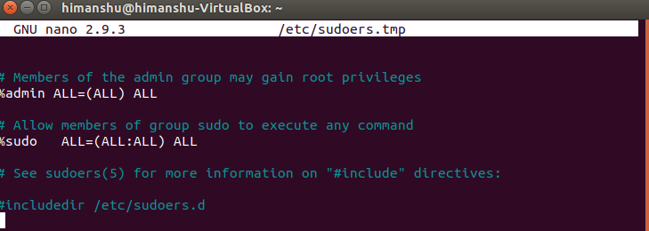
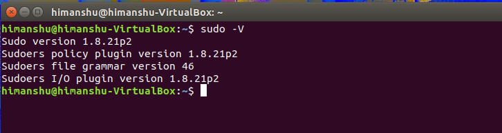
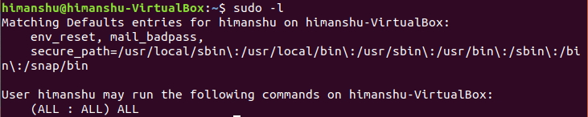
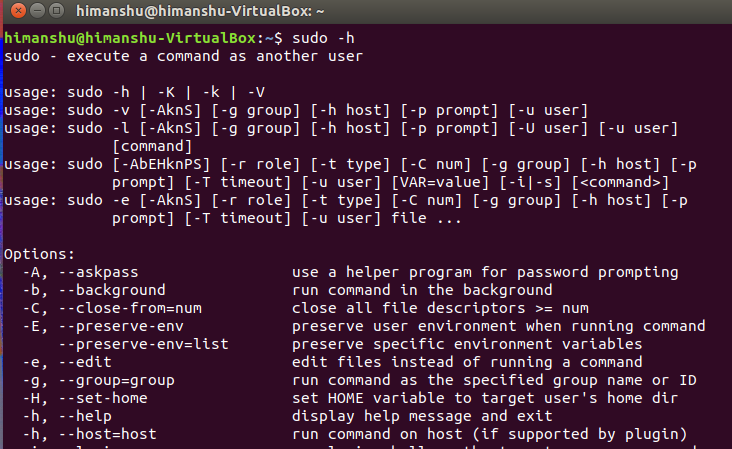
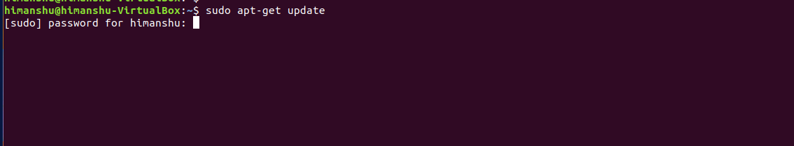
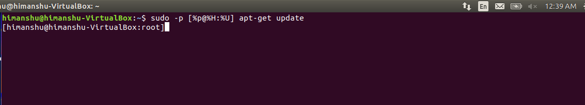

Linux Sudo
Sudo command in Linux with Examples
sudo (Super User DO) command in Linux is generally used as a prefix of some command that only superuser are allowed to run. If you prefix “sudo” with any command, it will run that command with elevated privileges or in other words allow a user with proper permissions to execute a command as another user, such as the superuser. This is the equivalent of “run as administrator” option in Windows. The option of sudo lets us have multiple administrators. These users who can use the sudo command need to have an entry in the sudoers file located at “/etc/sudoers”. Remember that to edit or view the sudoers file you have to use sudo command. To edit the sudoers file it is recommended to use “visudo” command.
By default, sudo requires that users authenticate themselves with a password which is the user’s password, not the root password itself.
sudoers file:
Syntax:
sudo -V | -h | -l | -v | -k | -K | -s | [ -H ] [-P ] [-S ] [ -b ] |
[ -p prompt ] [ -c class|- ] [ -a auth_type ] [-r role ] [-t type ]
[ -u username|#uid ] commandsudo -V | -h | -l | -L | -v | -k | -K | -s | [
-H ] [-P ] [-S ] [ -b ] |
[ -p prompt ] [ -c class|- ] [ -a auth_type ] [-r role ] [-t type ]
[ -u username|#uid ] command
Options
1. -V: The -V (version) option causes sudo to print the version number and exit. If the invoking user is already root, the -V option will print out a list of the defaults sudo was compiled with.
2. -l: The -l (list) option will print out the commands allowed (and forbidden) the user on the current host.
This shows the current user can use all commands as sudo.
3. -h or –help: The -h (help) option causes sudo to print a usage message and exit.
4. -v: If, given the -v (validate) option, sudo will update the user’s timestamp, prompting for the user’s password if necessary. This extends the sudo timeout for another 5 minutes (or as given in sudoers) but does not run a command. This does not give any output.
5. -k: The -k (kill) option to sudo invalidates the user’s timestamp.So, the next time sudo is run a password will be required. This option does not require a password and was added to allow a user to revoke sudo permissions from a .logout file.
6. -K: Similar to the -k option, the -K (sure kill) option is used to remove the user’s timestamp entirely. Likewise, this option does not require a password.
7. -b: The -b (background) option tells sudo to run the given command in the background. Note that if you use the -b option you cannot use shell job control to manipulate the process.
8. -p:The -p (prompt) option allows you to override the default password prompt and use a custom one. The following percent (‘%’) escapes are supported:
%u is expanded to the invoking user’s login name;
%U is expanded to the login name of the user the command will be run as (which defaults to root);
%h is expanded to the local hostname without the domain name;
%H is expanded to the local hostname including the domain name (only if the machine’s hostname is fully qualified or the “fqdn” sudoers option is set);
%% (two consecutive % characters) are collapsed into a single % character.
Normally we get this for a sudo command:
Using sudo -p we get,
9. -n: Use -n option as shown below, which will execute the command without prompting for the password. This is very helpful when we want to run some of the sudo commands as background jobs (or in a shell script), where we don’t want sudo to ask for the password. -n option stands for non-interactive.
10. -u: The -u (user) option causes sudo to run the specified command as a user other than root. To specify a uid instead of a username, use #uid.
11. -s: The -s (shell) option runs the shell specified by the SHELL environment variable if it is set or the shell as specified in the file passwd.
12. -H: The -H (HOME) option sets the HOME environment variable to the home directory of the target user (root by default) as specified in passwd. By default, sudo does not modify HOME.
13. -S: The -S (stdin) option causes sudo to read the password from standard input instead of the terminal device.
14. -a: The -a (authentication type) option causes sudo to use the specified authentication type when validating the user, as allowed by /etc/login.conf. The system administrator may specify a list of sudo-specific authentication methods by adding an “auth-sudo” entry in /etc/login.conf.
15. –: The — flag indicates that sudo should stop processing command line arguments. It is most useful in conjunction with the -s flag.